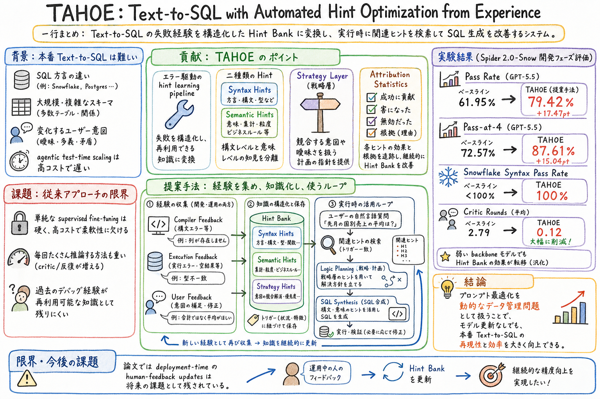

第一の貢献は、error-driven hint learning pipeline である。コンパイラ、実行、ユーザーからの feedback を、次回に使える structured hints へ変換する。

この論文の何がいいか
TAHOE は、失敗ログを単なる反省文にしない。失敗から得た知識を、どの条件で再利用するのか、どのトリガーに効くのか、どの戦略と競合するのか、成功・害・無効・根拠の統計はどうか、という形で管理する。この視点は、個人 AI assistant の skill 運用にもかなり効く。
たとえば Codex skill や scheduled ops では、毎回の失敗を MEMORY に文章として足すだけだと、似た文脈で取り出せなかったり、古いルールと新しいルールが衝突したりする。TAHOE 的に見るなら、失敗経験は Hint Bank、適用条件、競合 strategy、効果測定を持つ外部状態として扱うべきになる。
また、TAHOE は『モデルを賢くする』よりも『経験を再利用できる形で外側に置く』方向の論文だ。これは、agent harness、skill memory、wiki、audit log を育てる実務感に近い。モデル更新なしに改善するという主張も、個人運用ではかなり現実的な読み筋になる。
どんな論文か
TAHOE の出発点は、Text-to-SQL を本番運用へ持ち込むと、単に自然言語から SQL を出すだけでは足りなくなるという問題にある。SQL 方言、巨大な schema、ユーザーごとの暗黙ルール、変化する好み、実行環境から返るエラーが絡むと、モデルの一般能力だけでは安定しない。
よくある対処は supervised fine-tuning、または agentic test-time scaling で何度も考えさせる方法だが、前者は硬くて更新コストが高く、後者は推論コストが重い。TAHOE はこの間を狙い、過去の失敗と feedback を、次回に検索して使える運用知として保存する。
中心概念は Hint Bank である。Compiler feedback は SQL 方言などの Syntax Hints へ、execution feedback や user feedback は schema やユーザー意図に関わる Semantic Hints へ蒸留される。さらに、同じ自然言語トリガーに対して競合するユーザー意図があり得るため、Strategy Layer が competing strategies と recency signal を扱う。
実行時には、自然言語質問に関連する hints を取り出し、Logic Planning を通してから SQL Synthesis へ進む。つまり TAHOE は、プロンプトを一枚の巨大な指示文として肥大化させるのではなく、失敗経験を retrieval 可能な structured state として扱う。
この論文の読みどころは、Text-to-SQL 固有の改善だけではない。失敗ログを Syntax、Semantic、Strategy、attribution statistics に分ける考え方は、agent skill、wiki memory、learn-from-logs のような運用知を育てる仕組みにもそのまま転用しやすい。
TAHOE は、Text-to-SQL のための automated hint optimization system である。自然言語質問から SQL を作る過程で起きた compiler error、execution feedback、user feedback を再利用可能な hints に変換し、次の SQL 生成時に取り出して使う。
論文は、プロンプト最適化を dynamic data management problem として捉える。つまり、よいプロンプトを一度書く問題ではなく、失敗経験を収集し、整理し、衝突を管理し、実行時に取り出し、効果を測る問題として扱う。
評価対象は Spider 2.0-Snow の Text-to-SQL タスクで、Snowflake 方言や大規模 schema への対応が重要になる。論文では development-phase workflow を実装・評価し、deployment-time human-feedback updates は今後の課題として残している。
課題と貢献
第二の貢献は、Syntax Hints と Semantic Hints の分離である。SQL 方言や構文ルールは Syntax Hints に、schema やユーザー固有ロジックは Semantic Hints に分けることで、異なる種類の失敗を同じメモに混ぜない。
同じ自然言語トリガーに対して複数の解釈や方針が競合する場合、recency signal と attribution statistics を使って扱う。
第四の貢献は、post-learning attribution statistics である。各 hint や strategy が成功、害、無効、根拠をどの程度持つかを要約し、経験を足すだけでなく効き方を見られるようにする。
手法のしくみ
1
入力は、ユーザーの自然言語質問、対象 database schema、SQL 方言、過去に蓄積された Hint Bank である。
2
Development phase では、SQL 生成の失敗から feedback を集める。Compiler feedback は方言固有の構文ルールや禁止パターンを見つける材料になり、Syntax Hints として保存される。
3
Execution feedback と user feedback は、schema の意味、どの列を使うべきか、ユーザーが意図する集計やフィルタ条件は何か、といった Semantic Hints に変換される。
4
Strategy Layer は、同じ自然言語表現に対して複数の方針があり得る時に働く。自然言語 trigger、競合する strategies、recency、成功・害・無効・根拠の統計を持つことで、古い経験や局所的な成功が無制限に強くならないようにする。
5
Inference phase では、質問に関連する hints を検索し、Logic Planning で query intent と schema logic を組み立て、SQL Synthesis で最終 SQL を生成する。モデル重みは更新せず、外部の Hint Bank を使って生成を誘導する。
検証結果
Spider 2.0-Snow の 113 supervised examples を使った評価で、GPT-5.5 の pass rate は 61.95% から 79.42% に上がった。
複数候補を出す場合でも、Hint Bank が探索の質を上げていると読める。
これは Syntax Hints が SQL 方言の反復エラーをかなり抑えていることを示す。
平均 compiler-feedback critic rounds は 2.79 から 0.12 へ下がった。成功率だけでなく、修正に必要な往復が減る点が実務的に大きい。
同じ Hint Bank は weaker backbones にも転移し、Doubao-2.0-lite では pass rate が 19.7 percentage points 改善した。経験を外部知識として持つことで、特定モデルだけに閉じない改善になっている。
課題と議論
TAHOE の面白さは、prompt optimization を文字列編集ではなく、経験の schema 設計として扱う点にある。何を保存するか、どう検索するか、競合したらどう扱うか、効果をどう測るかが中心問題になる。
これは agent skill 運用にも近い。失敗ログから『次は気をつける』と書くだけでは、適用条件も競合ルールも効果測定も弱い。TAHOE 的には、失敗を typed hints に分け、自然言語 trigger と evidence を持たせ、成功・害・無効を後から見られるようにする。
一方で、論文が評価しているのは development-phase workflow であり、deployment-time human-feedback updates は future work である。実運用でユーザー feedback を継続的に取り込むには、古い hints の退役、衝突解決、悪化時の rollback がさらに重要になる。
次に読むなら
- learn-from-logs と並べて読むと、ログから MEMORY へ移す情報を、一般ルール、適用トリガー、失敗タイプ、競合 strategy、効果測定に分ける設計が見える。
- SkillOpt や MUSE-Autoskill と並べると、自然言語 skill を外部状態として育てる話と、失敗経験を Hint Bank として育てる話がつながる。
- Code as Agent Harness と並べると、TAHOE の Hint Bank は model の外側にある harness state として読める。SQL 生成だけでなく、agent の実行環境が持つ operational memory の一種になる。
- 次に実装へ落とすなら、既存 MEMORY の一部を Hint Bank 風に再設計し、ルール本文だけでなく trigger、scope、evidence、success / harm / inertness を持たせる小さな試作がよさそう。
読後Q&A
この論文の中心問いは？
Text-to-SQL の失敗経験を、次の SQL 生成で再利用できる structured hints として管理できるか、という問い。
TAHOE は何をするシステム？
Compiler feedback、execution feedback、user feedback を Hint Bank に蓄積し、実行時に関連 hints を取り出して Logic Planning と SQL Synthesis を助ける。
Syntax Hints と Semantic Hints の違いは？
Syntax Hints は SQL 方言や構文規則に関する再利用知識。Semantic Hints は schema、user preference、業務ロジック、解釈に関する再利用知識。
Strategy Layer はなぜ必要？
同じ自然言語トリガーでも、ユーザー意図や schema 文脈によって複数の解釈が競合するため。TAHOE は competing strategies、recency、attribution statistics でそれを扱う。
モデルを fine-tuning するの？
論文の主張は、モデル重みを更新せず、外部の Hint Bank と retrieval によって Text-to-SQL を改善する方向にある。
評価で何が改善した？
Spider 2.0-Snow の 113 supervised examples で、GPT-5.5 の pass rate は 61.95% から 79.42%、pass-at-4 は 72.57% から 87.61% に上がった。Snowflake syntax pass rate は 100%、平均 compiler-feedback critic rounds は 2.79 から 0.12 に下がった。
一番実務的に大きい結果は？
成功率だけでなく、critic rounds が大きく下がること。これは本番での往復、遅延、コスト、デバッグ負荷を減らす方向に効く。
弱いモデルにも効く？
論文では同じ Hint Bank が weaker backbones にも転移し、Doubao-2.0-lite で 19.7 percentage-point の pass-rate gain があったと報告している。
この論文を agent skill 運用に読むなら？
失敗ログを MEMORY に文章として足すだけでなく、typed hints、trigger、strategy、evidence、success / harm / inertness の統計を持つ外部状態として扱うヒントになる。
限界は？
論文では development-phase workflow を実装・評価しており、deployment-time human-feedback updates は future work とされている。継続運用では、古い hints の退役や衝突解決が追加で必要になる。